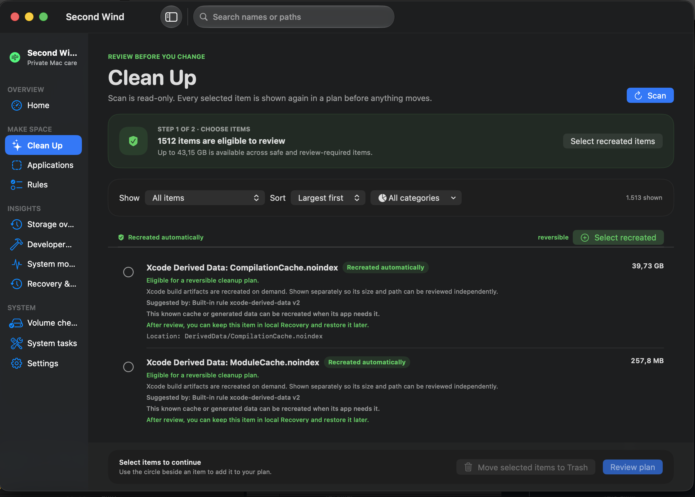
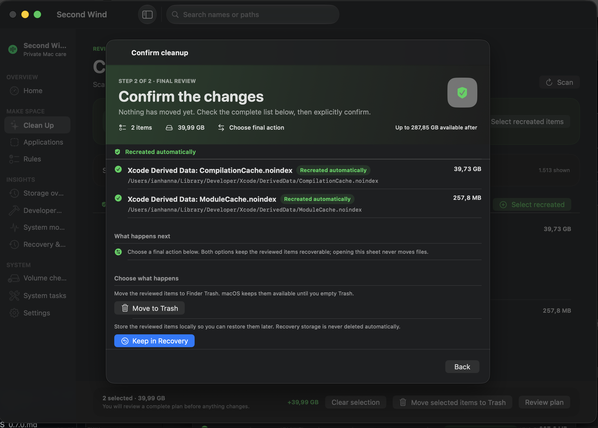
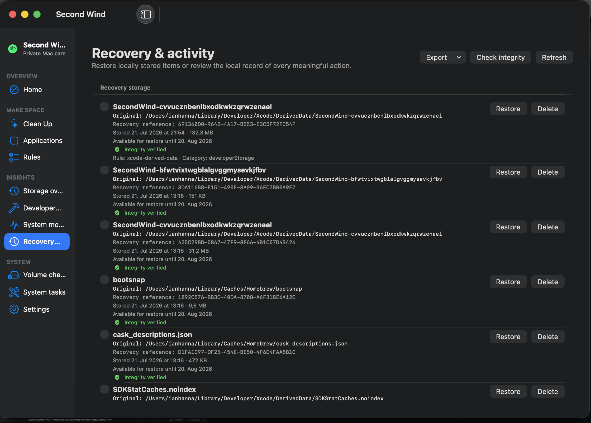
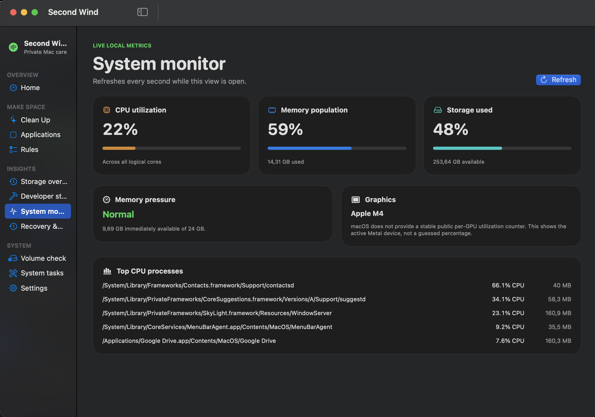

Storage intelligence
Each scan records a local inventory of what Second Wind understands, grouped into categories with the concrete paths behind them — compared against the previous scan.
Local-first storage intelligence · macOS 15+
Second Wind reviews the storage your Mac already holds — and only the places it explicitly understands. Review what it finds, confirm what changes, and reclaim space with confidence.
Understand Xcode build data, known application storage, caches, logs, Downloads, and other explicitly supported locations.

What it does
Second Wind is intentionally conservative. It understands a small set of storage locations deeply, and treats everything else as off-limits.
Each scan records a local inventory of what Second Wind understands, grouped into categories with the concrete paths behind them — compared against the previous scan.
Deterministic recommendations explain a known location, its size, and its local modification date. They never select, move, or delete anything on their own.
Reviewed items move to Finder Trash or stay in local Recovery storage — recoverable until you decide otherwise. Permanent deletion is a separate, deliberate action.
Separates each app bundle from its known support data, caches, logs, and containers — with the path and association reason for every relationship.
A fully standalone Prometheus & Grafana companion reads existing local snapshots and serves an immutable view on 127.0.0.1. It never exposes paths or filenames.
Check a validated local volume with macOS's read-only verification. Ambiguous or sensitive locations stay protected rather than being guessed at.
Inside the app
The whole workflow is designed around one idea: you stay in control. Explore the screens below.




The philosophy
Second Wind exists to help people understand and make deliberate storage changes on their own Mac — not to invent problems, create urgency, or promise magic.
Second Wind acts only on locations and categories it explicitly understands. Unknown, ambiguous, or sensitive data is left untouched rather than guessed at.
A scan is observation, not action. Every change is shown in a plan and must be explicitly confirmed. Opening a review sheet never moves a file.
Reviewed items move to Finder Trash or local Recovery storage. Recovery items remain on the Mac and are never deleted automatically.
No claims about cleaning RAM, speeding up a Mac, repairing permissions, or invented system-health scores. It reports the local information it can support.
The standard release works without elevated privilege and does not include the optional helper. The helper source accepts only typed, validated requests — never arbitrary commands or paths.
No account, remote telemetry, analytics, cloud sync, remote rule downloads, or update checks. Decisions come from bundled rules; behavior is traceable in the code.
New cleanup capability is added only when its boundaries, recovery story, review flow, and tests are clear. Convenience is never a reason to make destruction less understandable.
Privacy, by design
The main app requires no account or remote service. Its inventory, snapshots, Recovery data, and activity history are stored locally, and its decisions come from rules bundled with the app.
Read the source on GitHubNo signup, no login, no profile.
Second Wind does not transmit information about you or your Mac.
No remote rule downloads or automatic update checks.
Snapshots, Recovery manifests, and activity live on your Mac.
When enabled, Prometheus & Grafana read redacted aggregate metrics through a loopback-only endpoint. They never receive paths or names.
Where it looks
Second Wind explains the storage areas it understands without presenting them as automatic cleanup targets.
Guides
Practical, conservative guides for common macOS storage questions. They explain what to inspect, what to avoid, and where Second Wind can help.
Storage basics
Start with evidence, identify the largest known areas, and avoid treating unknown storage as disposable.
Read guide →Developer storage
Understand what Xcode rebuilds, what a cleanup changes, and why active builds should be left alone.
Read guide →Caches
Learn why cache folders are not all equal and why location and ownership matter before cleanup.
Read guide →Recovery
Choose the right reversible destination and know what happens before permanent deletion.
Read guide →System storage
See why a large System Data number is not a safe deletion list and what to inspect instead.
Read guide →All guides
Start with a real problem, then follow a cautious path to understanding and cleanup.
Browse guides →Get started
Requires macOS 15 or later. Keep current backups before using any software that can move files — Second Wind is designed to reduce risk, not eliminate it.
Download the release archive, verify it against SHA256SUMS,
move Second Wind.app to /Applications, and follow
the installation guide. Builds are ad-hoc signed — macOS may ask you to
Open Anyway on first launch.
Install with Homebrew
brew install --cask IanHanna12/tap/second-windHomebrew downloads the same release archive and installs Second Wind as a macOS app.
Or build from source
git clone https://github.com/IanHanna12/secondWind.git
cd secondWind
./Scripts/run-debug-app.shLaunches the standard app without the optional privileged helper enabled.
Help shape what comes next
Second Wind is new. Reports from real Macs are more useful than speculative features. Share redacted details only—never post full paths, user names, Recovery references, manifests, or diagnostic exports.